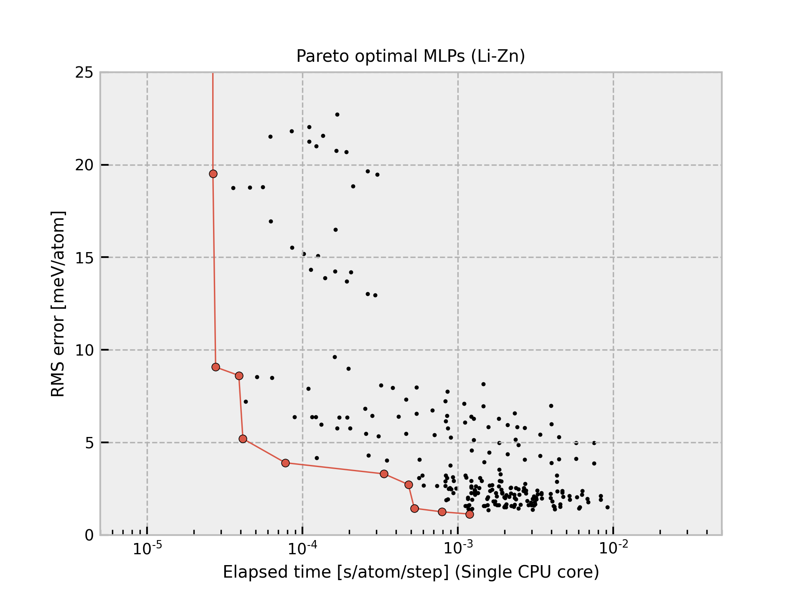

Rh-2020-06-29-dataset-10000-all-icsd¶
{kind=link}
The current structure dataset comprises 10,000 structures generated from unique ICSD prototype structures composed of single elements with zero oxidation state. A more detailed procedure is found in Phys. Rev. B 99, 214108 (2019). The procedure to estimate interatomic potentials from the dataset is found in Phys. Rev. B 99, 214108 (2019) and Phys. Rev. B 102, 174104 (2020).
All Pareto optimal MLPs are available
here.
Name |
Time [ms] (1 core / 36 cores) |
RMSE [meV/atom] / [eV/ang.] |
|---|---|---|
pair-1 |
0.014 / 0.005 |
94.382 / 0.5508 |
pair-15 |
0.019 / 0.005 |
60.118 / 0.3766 |
pair-22 |
0.023 / 0.012 |
37.119 / 0.3396 |
pair-23 |
0.034 / 0.014 |
35.190 / 0.3330 |
pair-44 |
0.059 / 0.008 |
32.844 / 0.3316 |
pair-51 |
0.084 / 0.010 |
32.092 / 0.3303 |
pair-45 |
0.089 / 0.012 |
29.929 / 0.3284 |
pair-46 |
0.097 / 0.015 |
29.144 / 0.3257 |
pair-52 |
0.104 / 0.018 |
29.070 / 0.3274 |
pair-53 |
0.136 / 0.016 |
27.956 / 0.3239 |
pair-54 |
0.175 / 0.020 |
26.607 / 0.3213 |
pair-55 |
0.222 / 0.026 |
25.596 / 0.3192 |
gtinv-506 |
0.269 / 0.018 |
23.275 / 0.2610 |
gtinv-590 |
0.279 / 0.019 |
20.822 / 0.2614 |
gtinv-591 |
0.582 / 0.046 |
17.051 / 0.2365 |
gtinv-742 |
0.692 / 0.042 |
12.911 / 0.2194 |
gtinv-790 |
0.695 / 0.041 |
12.910 / 0.2194 |
gtinv-592 |
0.715 / 0.046 |
12.590 / 0.2172 |
gtinv-791 |
0.751 / 0.047 |
12.545 / 0.2110 |
gtinv-743 |
0.756 / 0.043 |
12.544 / 0.2110 |
gtinv-792 |
0.814 / 0.045 |
12.356 / 0.2096 |
gtinv-593 |
1.117 / 0.061 |
11.406 / 0.2044 |
gtinv-508 |
1.420 / 0.079 |
9.4853 / 0.1999 |
gtinv-595 |
1.457 / 0.084 |
9.3197 / 0.1961 |
gtinv-596 |
1.985 / 0.100 |
8.5047 / 0.1923 |
gtinv-711 |
2.470 / 0.131 |
8.3449 / 0.1864 |
gtinv-509 |
2.488 / 0.131 |
8.3449 / 0.1864 |
gtinv-744 |
2.491 / 0.133 |
8.3441 / 0.1864 |
gtinv-598 |
2.519 / 0.142 |
8.3039 / 0.1855 |
gtinv-745 |
2.552 / 0.130 |
8.1803 / 0.1835 |
gtinv-795 |
2.618 / 0.135 |
8.0833 / 0.1830 |
gtinv-599 |
3.176 / 0.151 |
8.0012 / 0.1816 |
gtinv-510 |
3.910 / 0.217 |
7.9433 / 0.1825 |
gtinv-601 |
3.971 / 0.220 |
7.8244 / 0.1817 |
gtinv-616 |
8.478 / 0.413 |
7.7509 / 0.1939 |
Column “Time” shows the time required to compute the energy and forces for 1 MD step and 1 atom, which is estimated from a simulation of 10 runs for a structure with 284 atoms using a workstation with Intel(R) Xeon(R) CPU E5-2695 v4 @ 2.10GHz. Note that the MLPs should be carefully used for extreme structures. The MLPs often return meaningless values for them.